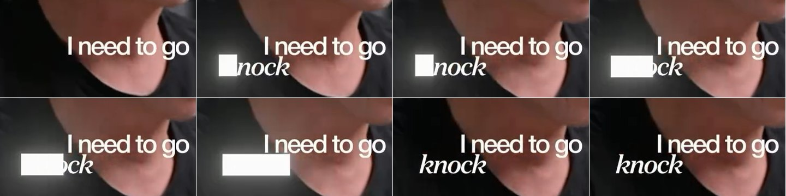

The Fridge reel recaptioned with the reference's caption system and our two fonts. Plain words come on with a flat white block. Only the key word in each phrase gets the serif italic and the glowing sweep. One shot has no caption on purpose.
Slow-shutter trail on every glow word
Numbers roll in like an odometer, a size up
Captions bigger, more room between lines
Talking head: lower (starts 110 px below the chin), bigger, more space between lines
Locked v2. Real speed is 30 fps; slow motion plays it 6 times slower so you can see each frame of the trail and the roll.
Reference, frame by frame

Video-36963, frames 849 to 856. "I need to go" is already up, then knock: a white block with a glow grows across the word over 5 frames, then the clean word.
Size Sans 84 px and serif italic 92 px on 1080 wide. Numbers 132 px. Line spacing 1.12 of the biggest word on the line.
Placement B-roll: centred at about 52% height, or up at about 30% when the centre is busy. Talking head: on the chest, left edge x 90, starting at y 1160 (the chin is at about 1050), left of the mic, so the face is never covered. Lines are left-aligned and the key line can be indented.
Plain words One frame of a flat white block, then the word. No glow, no trail.
Key word Serif italic. A blurred ghost, then a glowing block grows across the word while the earlier block positions linger as a fading trail (slow shutter). The word lands smeared sideways with two fading echoes, then sharpens over 2 frames.
Numbers Every digit rolls like an odometer, blurred vertically while it spins, landing left to right with a soft glow. The rest of the key phrase then sweeps in.
No caption When the shot already says it (a logo, a sign, a headline) or the frame is too busy.
Text White, soft shadow, sentence case, full stops kept, no commas at line ends.